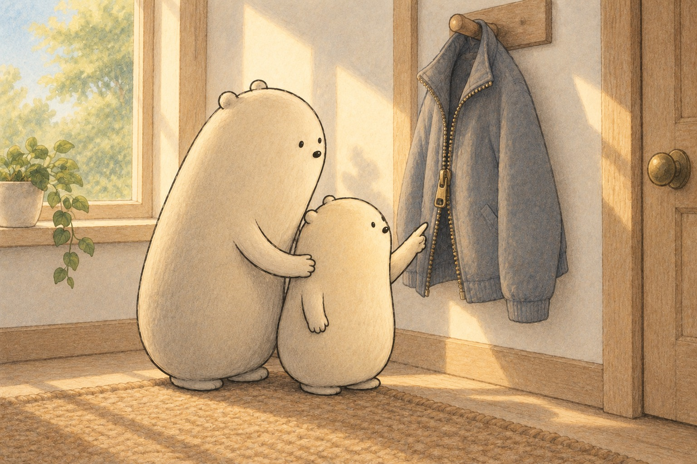
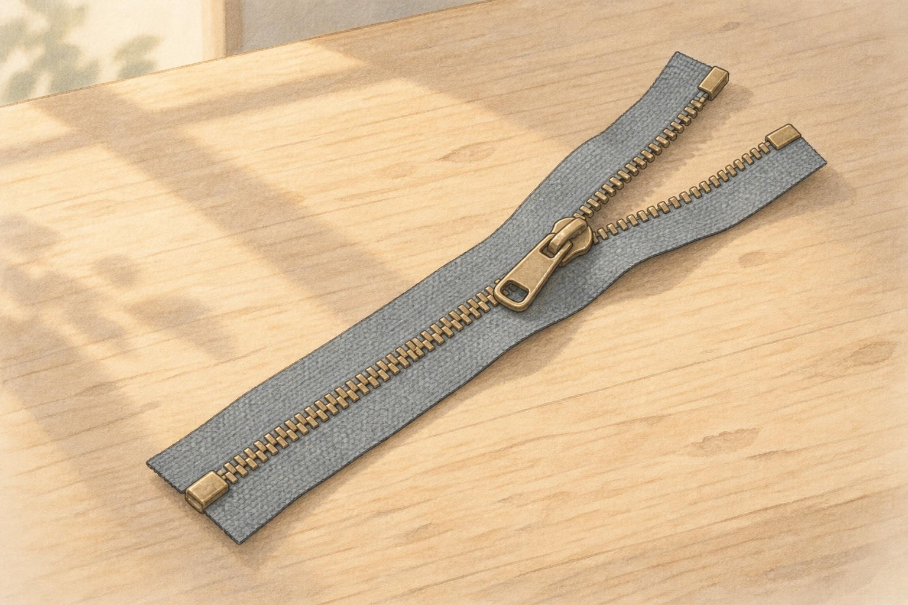
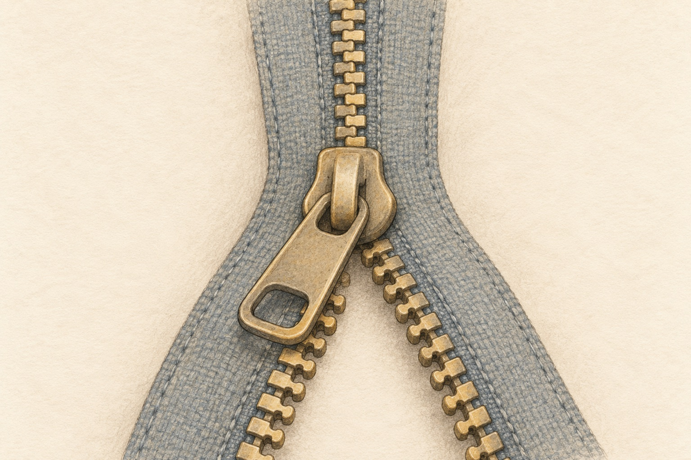

Six clues inside a zipper
How a Zipper Holds Shut and Comes Apart

Big and Little found a jacket hanging on a peg, its zipper half closed. Above the slider the two sides were joined in one neat row. Below it they hung apart. Little wondered how one small piece could close a whole jacket. Big said a zipper is a team of small parts, each with its own job.

Laid flat on a table, a zipper shows its three main parts. The tape is the cloth strip that gets sewn to the jacket. The teeth, also called elements, are fixed in a row along each tape. The slider rides along both rows. Pull it one way and it joins the teeth. Pull it the other way and it parts them.

Up close, each tooth has a little bump on one side and a hollow on the other. The left teeth sit halfway between the right teeth, like fingers ready to fold together. Inside the slider, the two rows are squeezed together at an angle, so each bump tucks into the hollow of the next tooth. Teeth that fit together like this mesh, and the joined row is called the chain.
- tape
- the cloth strip of a zipper that gets sewn to a jacket or bag
- elements
- another name for a zipper's teeth
- slider
- the piece you pull to join or part the teeth
- mesh
- to fit together closely, like zipper teeth do
- chain
- the joined row of zipper teeth
- retainer box
- the small box at the bottom of an open-end zipper that holds the pin